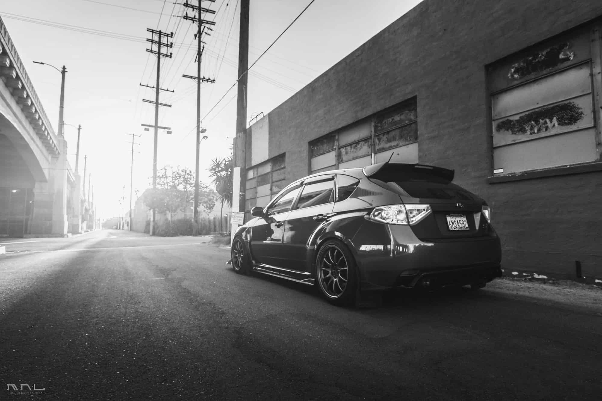

We are the only dealership in north america that offers every year of the subaru WRX STI, Pick a model year and we can have it delivered to you in 30 days or less.
1992-1999
Oct 15th 2020
Although we never got a chance to sample the original WRX when it was new, the first-generation car is worthy of a salute. Available initially as a sedan or a hatchback (with a two-door to follow) the new model would introduce the EJ engine series to the Impreza platform for the first time...read more
2000-2007
Oct 15th 2020
The second-generation Subaru WRX introduced the concept of a turbocharged rally rocket to North American buyers in 2002, a couple of years after its Japanese debut to kick the compact performance segment into high gear. It was perfect timing, as the late-’90s renaissance among tuners was just about to crest, giving Subaru a level of prestige among younger buyers it had never before enjoyed...read more
2008-2014
Oct 15th 2020
Of all the WRX model years on this list, the 2008-2014 is the only real disappointment. The reasons are legion. Early sedans and hatchbacks featured plain vanilla styling that did little to separate them out from the standard Impreza of that year, with the STI’s wide-body look only arriving as a mid-cycle refresh...read more
2008-2014 hatchback
Oct 15th 2020
However you cut it, the only genuine hatchback within the Subaru line of cars was the third generation Subaru Impreza hatch. True, the company did make odd-shaped, wagon-like hatchbacks on top of the Impreza chassis since the very beginning in 1992, but none of them had that proper hatchback quality...read more
2015-present
Oct 15th 2020
The current version of the Subaru WRX is by far the easiest to live with on a daily basis. Although not as direct-feeling as older models (due to electric power steering on the standard WRX, plus the inevitable weight gain) the most recent sedan is comfortable to drive, still reasonably affordable, and delivers respectable performance from its 268-horsepower FA 2.0-liter engine...read more.